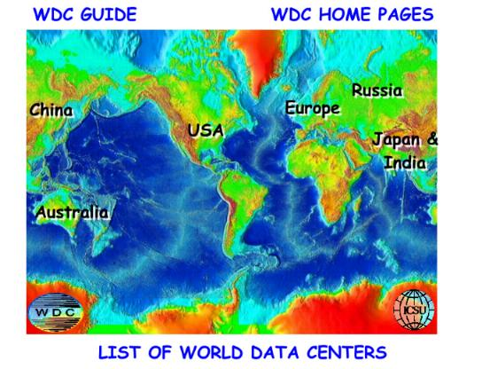

|  |
The ICSU Panel on World Data Centres hopes that this Guide will provide a useful overview of the system. . World Data Center Home Page International Council of Scientific Unions - World Data Center System The World Data Center System This web site is mirrored in Moscow, Russia and in Chilton, UK. Click on the name of the World Data Center in the image map below to see more about that Center The presentations from the November 2000 All WDC are available on-line. The first large-scale international scientific enterprises were the International Polar Years of 1882-1883 which eventually led to the International Geophysical Year of 1957-1958. |